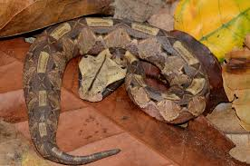

The gaboon viper is on the bigger side of venomous snakes being the largest viper in africa its colloration and broad head mimics the shape and color of fallen leaves its camouflage is top teir though even being venomus this snake has a calm nature and rarely bites humans.
